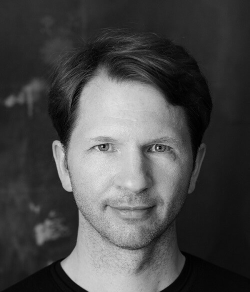
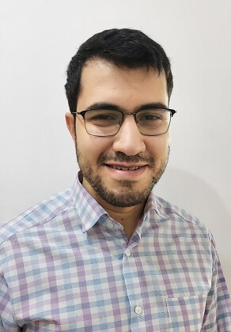
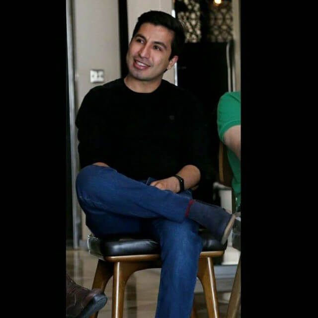
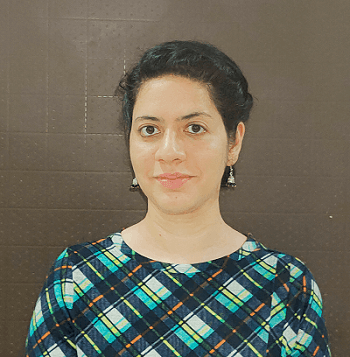
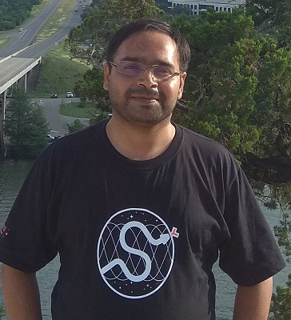
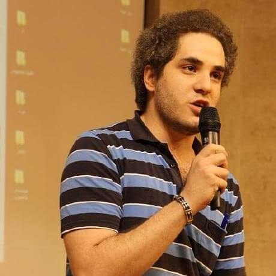
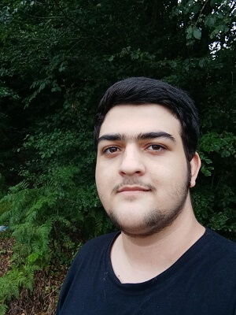
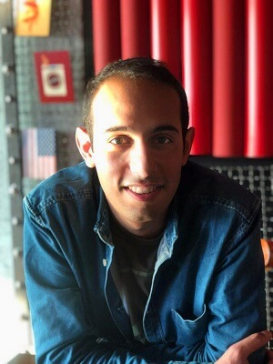

خبرهای کنفرانس

- 21 دی مهلت ارسال پیشنهادات تا 15 بهمن تمدید شد >
- 19 دی تاریخ برگزاری کنفرانس پایکان ایران 1400 به 27 تا 29 بهمن تغییر کرد
- 20 آذر کنفرانس پایکان ایران از کسب و کارهای نوپا (استارتاپ) حمایت می کند>
- 19 آذر سرور دیسکورد کنفرانس راه اندازی شد. بخشی از سازماندهی کنفرانس توسط دیسکورد انجام می شود. لطفا به این سرور بپیوندید>
- 26 آبان فراخوان ارسال پیشنهادات باز است و شما می توانید تا 15 دیماه پیشنهادات خود را ارسال کنید>
- 25 آبان کنفرانس پایکان ایران در تاریخ 29 دی تا 1 بهمن برگزار می شود. اکنون می توانید ثبت نام کنید>
سخنرانان
سخنرانان کلیدی

ترنت مککانهی
هم بنیانگذار Ocean Protocol
ترنت مککانهی هم بنیانگذار Ocean Protocol است که ابزارهایی غیرمتمرکز به منظور هموار سازی زمینه برای هوش مصنوعی و علم داده میسازد. او از اواسط دههی ۹۰ میلادی هوش مصنوعی، از اوایل دههی ۲۰۰۰ پایتون و از سال ۲۰۱۳ روی بلاکچین کار کرده است.
عنوان : توسعه قرارداد هوشمند با TokenSPICE و Brownie
تییری کارز
معاون مهندسی در بنیاد زیرساخت باز (Open Infrastructure Foundation)
تییری کارز معاون مهندسی در بنیاد زیرساخت باز (Open Infrastructure Foundation) است. او که یک مهندس سیستم است، در آغاز پروژهی اپناستک شرکت داشت و هنوز هم در اداره و مدیریت انتشار آن مشارکت دارد.
عنوان : یک ابر متن باز مبتنی بر پایتون: تاریخچه و آیندهی OpenStack
سخنراناندر حال تکمیل
سروش موسیپور
مدیر فنی مجموعهی کایوش
فعال در زمینههای توسعه نرمافزار، تحلیل و توسعهی ابزارهای مختلف امنیت اطلاعات و مهندسی معکوس با استفاده از زبانهای برنامهنویسی مختلف.
عنوان : یادگیری عمیق در عمل

احمد فنایی
مدیر تیم بکاند و دیتای ترب
در دانشگاه صنعتی شریف در رشته علوم کامپیوتر تحصیل کرد. احمد در سال ۹۵ با عنوان مهندس نرمافزار در شرکت ترب استخدام شد و الان هم مدیر تیم بکاند و دیتای ترب است.
عنوان : راهکارهای بهبود کارایی دیتابیس پستگرس در جنگو



حسن نوری
مدیر فنی و هم بنیانگذار فرمالو
او از سال 95 به عنوان مدیر ارشد تکنولوژی در استارتاپ استدیو ایدهران با تیمهای استارتاپی زیادی همکاری کرده است. بعد از شروع فرمالو، به عنوان مدیر ارشد تکنولوژی و معمار نرمافزار، درگیر چالش پیش بردن سریع یک محصول در حال رشد است.
عنوان : لطفا از میکروسرویسها فاصله بگیرید!
دیوید تیشلر
مدافع توسعهدهنده در شرکت Balena
دیوید یک مدافع توسعهدهنده در شرکت balena است، جایی که به توسعهدهندگان اینترنت اشیا نشان میدهد که چگونه به راحتی ناوگان دستگاههای متصل را بسازند و مدیریت کنند.
عنوان : مقیاس (اسکیل) کردن برنامههای پایتون در لبه

پارول پاندی
مهندس یادگیری ماشین در شرکت Weight & Biases
پارول پاندی به عنوان مهندس یادگیری ماشین در شرکت Weight & Biases کار میکند. قبل از آن، او یک دانشمند داده در H2O.ai بود، جایی که او علم داده و حمایت از توسعهدهندگان را در کار خود ترکیب میکند.
عنوان : تلاشی در جهت درک پیشبینیهای مدل

گاجندرا دشپانده
استادیار، علوم کامپیوتر و مهندسی در KLS.GIT
سخنران شناختهشده با سابقهی غنی، از جمله سخنرانی در کنفرانسهای معروف پایتون، مانند پایدیتا گلوبال، یوروپایتون، پایکان هند. گاجندرا از پایتون برای توسعه نمونههای اولیه محصول در زمینه امنیت سایبری استفاده میکند.
عنوان : ملاحظات امنیتی در پکیج پایتون
سباستین زیف
مهندس نرمافزار شرکت Ordina Pythoneers و یکی از اعضای بنیاد نرمافزار پایتون
در سال ۲۰۲۱، سباستین در کنفرانسهای مختلفی از جمله پایکان ایالات متحده، یورو پایتون، فوسدم، پایکان اندونزی، پایجامز و پایگران سخنرانی کرده است. او همچنین مالک سرور دیسکورد پایتون است.
عنوان : معرفی SQLAlchemy آسنکرون

سپند حقیقی
کارشناسی ارشد در رشتهي مهندسی کامپیوتر از دانشگاه صنعتی شریف
برنامهنویس متنباز، توسعهدهنده کتابخانههای art و PyCM
عنوان : کتابخانه art در ۵ دقیقه!
یاشار شاهینزاده
محقق و باگهانتر لایه اپلیکیشن
عنوان : ضعف امنیتی در فریمورک Django

امیرمحمد صفری
دانشآموز و باگهانتر لایه اپلیکیشن
عنوان : ضعف امنیتی در فریمورک Django

علیرضا ذوالانواری
دانشجوی مقطع دکتری در رشتهی علوم داده از دانشگاه خرونینگن هلند
توسعهدهنده کتابخانه PyCM
عنوان : پسپردازش الگوریتمهای یادگیری ماشین در پایتون
صدرا صبوری
دانشجو کارشناسی مهندسی برق و علوم کامپیوتر دانشگاه صنعتی شریف
توسعه دهنده متن باز پایتون
عنوان : ثمیلا، هنر مولد
درباره پایکان
سال از نیمه گذشته است و بیشتر آن در یک چشم به هم زدن گذشت. ما چیزهای زیادی را با هم تجربه کردیم. با هم علیه کووید-19 در حال مبارزهایم، در پیروزی ورزشکاران در المپیک توکیو و جام جهانی کشتی شادی کردیم، برای آینده خود سخت در تلاشیم و دستاوردهای خود را با خوشحالی با خانواده خود به اشتراک میگذاریم.
در سالی که در شرف زمستان است، باید دستاوردهایی داشته باشید و همچنین باید سوالات زیادی داشته باشید. شما میبایست خواهان فرصتی باشید که با دوستان همفکر خود دور هم جمع شوید و تجربیات خود را با یکدیگر به اشتراک بگذارید.
بنابراین، پایکان ایران اینجاست! ما امسال یک کنفرانس آنلاین جذاب را برای شما به ارمغان میآوریم، بیایید از لذت و شادی که پایتون برای ما به ارمغان میآورد، بهرهمند شویم.
پایکان ایران گردهمایی است برای همهی کسانی که از زبان برنامهنویسی پایتون متن باز استفاده میکنند و آن را توسعه میدهند. پایکان ایران وظیفهی خود را رشد جامعه ایرانی برنامهنویسان پایتون میداند.
یک مثل قدیمی وجود دارد که «یک کنفرانس مربوط به یک نفر نیست، بلکه یک گروه از افراد است،» بنابراین در اینجا از همه کسانی که انجمن پایتون را دوست دارند، استقبال میکنیم تا به ما بپیوندند، در این کار شراکت کنند و بیایید کنفرانس امسال را یک کنفرانس رویایی کنیم! بله، ما به شما نیاز داریم!
پایکان ایران یک کنفرانس متنوع است که سعی در ارایه یک تجربه موثر برای همه دارد. به ما کمک کنید تا این کار محقق شود.
پایتون برای همه
یکی از دلایلی که پایتون دوستانهترین و یکی از آسانترین زبانهای برنامه نویسی برای یادگیری است، وجود راههایی است که اشخاص میتوانند ایدههایی به منظور بهبود آن ارایه دهند. این کار از طریق پیشنهادهای بهبود پایتون یا PEP انجام میپذیرد. شناختهشدهترین آنها مکتب یا دکترین پایتون (PEP 20 - Zen of Python) و راهنمای سبک برای کد پایتون (PEP 8 - Style Guide for Python Code) هستند.
پایتون کار بسیار باسابقه، تیم پیترز اصول راهنمای دیکتاتور خیرخواه جاویدان برای طراحی پایتون را به صورت خلاصه در قالب 20 جملهی قصار بیان میکند، که تنها 19 مورد از آنها نوشته شده است؛ بنابراین مکتب پایتون عبارتست از:
- زیبا بهتر از زشت است.
- صریح بهتر از ضمنی است.
- ساده بهتر از پیچیده است.
- پیچیده بهتر از بغرنج است.
- تخت بهتر از تو در تو است.
- پراکنده بهتر از متراکم است.
- خوانایی اهمیت دارد.
- موارد خاص آنقدر خاص نیستند که قوانین را در همبشکنند.
- گرچه عملی بودن خلوص را مغلوب میکند.
- خطاها هرگز نباید بیصدا بگذرند.
- مگر اینکه به طور صریح ساکت شوند.
- در مواجهه با ابهام، از وسوسه حدس زدن دوری کنید.
- باید یک، و ترجیحا فقط یک، راه واضح برای انجام آن وجود داشته باشد.
- اگر چه ممکن است آن راه در ابتدا واضح نباشد مگر اینکه هلندی باشید.
- الان بهتر از هرگز است.
- اگر چه هرگز اغلب بهتر از *همین* الان است.
- اگر توضیح پیادهسازی سخت باشد، ایدهی بدی است.
- اگر توضیح پیادهسازی آسان است، ممکن است ایدهی خوبی باشد.
- فضای نامها یک ایدهی بسیار عالی هستند، بیایید بیشتر از آنها استفاده کنیم!